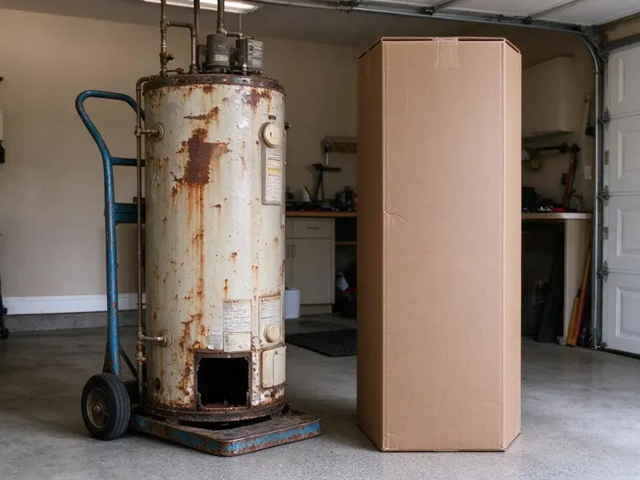

Plumbing Replacement in Morristown, TN
Facing persistent plumbing issues in your Morristown, TN home? Our team focuses on complete plumbing replacement, so your system works the way it should.
- Guaranteed Work
- Old Equipment Hauled Off
- Upfront Pricing
- Licensed & Insured

Reliable Plumbing Replacement Services in Morristown, TN.
Do not let old plumbing cause bigger issues. Contact BGV Plumbing for a professional assessment today.
Your Go-To for Plumbing Replacement in Morristown, TN
BGV Plumbing sees how quickly hard water, heat and shifting soil can wear out plumbing. Mineral buildup from harder water can shorten the life of water heaters and leave scale on faucets, showerheads and dishwasher parts. Water heaters scale up, softeners lose resin, well pumps burn out and old pipes corrode. We replace these components with quality equipment sized for your home and explain the expected lifespan of each.
Our expertise includes:
- High-Efficiency Water Heater Replacements
- Water line, sewer line and whole-home pipe replacements
- Sewer, water and gas line replacements

Additional Plumbing Replacement Services in Morristown, TN
When repairs are no longer enough, our replacement services in Morristown, TN deliver modern, efficient equipment installed right.


Customers
Why Choose BGV Plumbing for Plumbing Replacement in Morristown, TN?
Our commitment to quality means we only use parts and methods that hold up in the local climate. This helps your new plumbing replacement last for many years.
- Local Expertise, We understand the plumbing challenges posed by Tennessee soil conditions and climate, ensuring tailored solutions.
- Quality Materials, We use only reputable, long-lasting plumbing components from trusted brands like Rheem, AO Smith and Moen.
- Honest Advice, We tell you when a repair makes more sense than replacement.
Citywide Coverage
BGV Plumbing proudly serves every neighborhood and surrounding community of Morristown for plumbing replacement. No matter where you are located within the Morristown area, our skilled plumbers are ready to provide prompt and professional service.
Experienced Team
The team handles everything from a quick water heater swap to a full sewer line replacement. That range means one call covers the job, no matter how big.
Safety-First Approach
Safety is our top priority during every plumbing replacement project. We follow all local safety regulations and plumbing codes in Morristown, TN to protect your home and our team.
Trusted Certified Morristown Plumbing Services Professionals
At BGV Plumbing, we take pride in providing licensed, certified plumbing services throughout Morristown, TN. Backed by recognized industry credentials, our experienced plumbers combine technical skill with genuine customer care. Whether it is repair, installation, or maintenance, we follow strict safety and quality standards to deliver lasting results you can trust.
Call Us Now PHCC Plumbing Contractor Recognition
PHCC Plumbing Contractor Recognition Better Business Bureau (BBB) Accreditation
Better Business Bureau (BBB) Accreditation Angi Certified Pro
Angi Certified Pro ISO 9001 Quality Management Certification
ISO 9001 Quality Management CertificationDependable Plumbing Replacement Services in Morristown, TN
Pipe Replacement and Repiping in Morristown
Corroded, leaking or galvanized pipes can contaminate your water and cause costly damage. BGV Plumbing offers full pipe replacement, or repiping, for homes in Morristown. We replace old plumbing with new PEX or copper, improving water quality and pressure throughout your whole home. This is a key upgrade for many older homes.

Well Pump and Pressure Tank Replacement in Morristown, TN
Rural properties rely on well pumps to deliver water, and pump failure means no water at all. Common signs include pressure that fluctuates, a pump that cycles rapidly or no water at the tap. We replace submersible and jet pumps and waterlogged pressure tanks with properly sized equipment. Pressure switch settings are adjusted for steady pressure throughout the home.
Repair vs Replacement Cost Comparison in Morristown, TN
A common rule of thumb is to replace when a repair costs more than half the price of new equipment or when the item is near the end of its useful life. Replacement also makes sense when repeated repairs are adding up. We give you side-by-side pricing for repair and replacement so you can decide with real numbers. Many replacements also improve efficiency and reduce future repair costs.
Tankless Water Heater Replacement in Morristown, TN
Upgrade to endless hot water with a tankless water heater replacement. These units heat water on demand, saving energy and space, which is a great benefit for Morristown homes. We specialize in replacing older tankless units or converting from traditional tank heaters to high-efficiency tankless models from brands like Rinnai and Noritz. Our service includes assessing your home's gas line capacity or electrical service, ensuring proper venting and precise installation to maximize efficiency and longevity.
Water Line Replacement in Morristown, TN
A leaking main water line can lead to significant water loss, high bills and foundation damage, which is a serious concern for homes on slab foundations. Our water line replacement services address issues like corroded pipes, leaks or low water pressure. We locate the leak, excavate the area if necessary and replace the damaged section or the entire line with durable PEX or copper piping. We make sure of a secure, leak-free connection from the meter to your home, restoring reliable water flow.
Sump Pump and Well Pump Replacement in Morristown, TN
For homes with basements or relying on well water, a working pump is critical. BGV Plumbing replaces faulty sump pumps and well pumps with high-quality, reliable models. We make sure of correct sizing and installation for effective water removal and consistent water pressure, protecting your Morristown home from flooding and keeping a steady water supply. We work with brands like Zoeller and Grundfos.
Water Heater Replacement in Morristown
When your water heater is leaking, not heating or providing too little hot water, it is often more cost-effective to replace it than to repair it, especially if it is over 10 years old. We install standard tank water heaters, sized properly for your home's needs and compliant with current energy efficiency standards. Our team handles the safe removal of your old unit and the precise installation of your new one, connecting gas or electric lines and confirming correct venting and pressure relief valve operation for performance and safety.

Gas Line Replacement in Morristown
Old or damaged gas lines pose a serious safety risk and need immediate attention. If you suspect a gas leak or your gas lines show signs of corrosion or age, our licensed plumbers in Morristown can perform safe and code-compliant gas line replacement. We use appropriate materials like black steel pipe or corrugated stainless steel tubing (CSST) for secure installations, making sure all connections are leak-tested and meet strict safety regulations for your home's protection.
Nearby Plumbing Replacement in Morristown, TN
No matter where you are located in Morristown, our skilled plumbers can reach you quickly to assess and address your plumbing replacement needs. We take pride in being the plumbing replacement specialists the community relies on for quality and efficiency.
When you need reliable plumbing replacement services near me in Morristown, TN, BGV Plumbing is your local expert. We know the local plumbing infrastructure and its challenges well, which lets us provide effective and tailored solutions.
BGV Plumbing at a Glance
- Licensed and insured plumbers serving Morristown, TN
- 24/7 emergency service with same-day scheduling
- Clear written estimates, no hidden fees
- 4.9-star rated by 932+ Tennessee customers
Morristown Map
Morristown Information
- Population
- 32,099
- Area codes
- 423/865/931
- Service area
- Morristown and communities within 40 miles
- Nearby
- Knoxville, Kingsport, Johnson City, Bristol
Effective plumbing replacement is crucial for homes in Morristown, TN, since aging pipes, hard water and soil movement can all affect pipe integrity over time.
Expert Services
Trust our professionals for reliable BGV Plumbing solutions in Morristown, TN.
Our Specialized Plumbing Services in Morristown, TN
At BGV Plumbing, we provide a complete range of plumbing services across Morristown, TN. From leak detection to full system installations, our team ensures fast, precise, and affordable service for both residential and commercial properties. Explore our core services below:


How Our Plumbing Replacement Process Works in Morristown, TN
Our plumbing replacement process is designed for efficiency and transparency, so you understand every step of the project.
Request a Quote
Contact us at (615) 518-0893 to discuss your plumbing replacement needs. We will schedule a convenient time for a professional assessment at your Morristown property.
On-Site Evaluation
Our expert plumber will visit your home to inspect your current plumbing, diagnose issues and recommend the best replacement solutions. We provide a detailed, upfront estimate.
Professional Installation
Once approved, our skilled technicians will remove old plumbing and install new components. We work efficiently, follow all codes and keep disruption to your home to a minimum.
Frequently Asked Questions About Plumbing Replacement in Morristown
The cost of plumbing replacement in Morristown, TN varies widely based on the type of service. A water heater replacement can range from $1,200 to $3,500, while a sewer line replacement might be $3,000 to $15,000 or more. Whole-home repiping can cost between $4,000 and $15,000. We provide detailed, transparent estimates after an on-site assessment.
Yes, for critical issues like burst pipes or non-functional water heaters, BGV Plumbing offers emergency plumbing replacement. We understand that some plumbing failures cannot wait, and we prioritize urgent situations to restore safety and function to your Morristown home.
Common signs include frequent leaks, discolored water, persistent low water pressure, recurring clogs or visible corrosion on pipes. If repairs are becoming frequent and costly, replacement is often the more economical long-term solution.
We install water heaters from Bradford White, Rheem and A.O. Smith, tankless units from Rinnai and Navien, and quality softeners and well pumps from proven manufacturers.
Hard water causes scale and sediment, while heat and shifting soil stress pipes and equipment. Mineral buildup from harder water can shorten the life of water heaters and leave scale on faucets, showerheads and dishwasher parts. Regular maintenance helps, but replacement sooner or later becomes the smarter choice.
The timeline for plumbing replacement depends on the complexity of the job. A water heater replacement usually takes 2 to 4 hours. A main water line or sewer line replacement can take 1 to 3 days. Whole-home repiping projects usually span 3 to 7 days, depending on the size of the house and accessibility.
Frequent leaks, rusty or discolored water, low pressure, recurring backups and equipment over 10 years old are typical signs. We can inspect and give you an honest assessment.
BGV Plumbing stands behind our work with solid warranties on both labor and materials. Specific warranty terms vary by product and service, but we always back your peace of mind with quality guarantees.
What People Are Saying About Our Plumbing Experts?

Mark T.
When our office needed drain cleaning, BGV Plumbing provided quick, reliable service. The plumber arrived on time and made sure every drain flowed perfectly before leaving. Very satisfied.
Drain Cleaning · Knoxville, TN
Patricia H.
We had a slab leak that two other companies could not find. BGV Plumbing located it in under an hour, explained our options, and the price matched the quote to the dollar.
Slab Leak Repair · Chattanooga, TN
Robert G.
The trenchless sewer replacement saved our front yard. They walked us through the camera inspection footage first so we knew exactly what we were paying for.
Sewer Line Replacement · Kingsport, TN
Laura S.
I scheduled a water heater replacement, and the team made the process smooth and affordable. The new unit works perfectly, and they cleaned up after completing the job.
Water Heater Replacement · Kingsport, TNJames P.
Our commercial plumbing system had a leak under the sink, and BGV Plumbing handled it professionally. The plumbers arrived quickly and restored everything without disruption to our customers.
Commercial Plumbing · Johnson City, TNSofia M.
Two new toilets installed in one visit, no mess left behind, and the tech even adjusted a faucet he noticed was dripping. Fair pricing and really friendly.
Toilet Installation · Bristol, TN